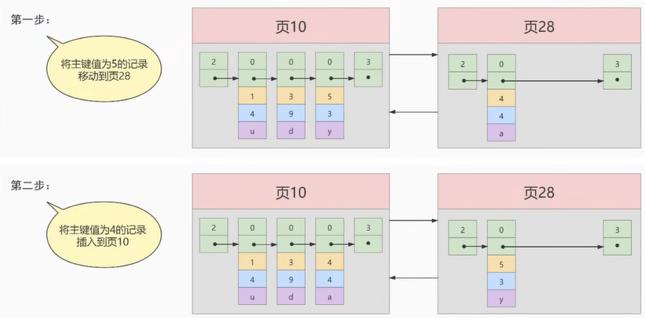

为什么使用索引
索引是存储引擎用于快速找到数据记录的一种数据结构，就好比一本教科书的目录部分，通过目录中找到对应文章的页码，便可快速定位到需要的文章。MySQL中也是一样的道理，进行数据查找时，首先查看查询条件是否命中某条索引，符合则通过索引查找相关数据，如果不符合则需要全表扫描，即需要一条一条地查找记录，直到找到与条件符合的记录。

如上图所示，数据库没有索引的情况下，数据分布在硬盘不同的位置上面，读取数据时，摆臂需要前后摆动查询数据，这样操作非常消耗时间。如果数据顺序摆放，那么也需要从1到6行按顺序读取，这样就相当于进行了6次IO操作，依旧非常耗时。如果我们不借助任何索引结构帮助我们快速定位数据的话，我们查找 Col 2 = 89 这条记录，就要逐行去查找、去比较。从Col 2 = 34 开始，进行比较，发现不是，继续下一行。我们当前的表只有不到10行数据，但如果表很大的话，有上千万条数据，就意味着要做很多很多次硬盘I/0才能找到。现在要查找 Col 2 = 89 这条记录。CPU必须先去磁盘查找这条记录，找到之后加载到内存，再对数据进行处理。这个过程最耗时间就是磁盘I/O（涉及到磁盘的旋转时间（速度较快），磁头的寻道时间(速度慢、费时)）
假如给数据使用 二叉树 这样的数据结构进行存储，如下图所示
 对字段 Col 2 添加了索引，就相当于在硬盘上为 Col 2 维护了一个索引的数据结构，即这个
对字段 Col 2 添加了索引，就相当于在硬盘上为 Col 2 维护了一个索引的数据结构，即这个 二叉搜索树。二叉搜索树的每个结点存储的是 (K, V) 结构，key 是 Col 2，value 是该 key 所在行的文件指针（地址）。比如：该二叉搜索树的根节点就是：(34, 0x07)。现在对 Col 2 添加了索引，这时再去查找 Col 2 = 89 这条记录的时候会先去查找该二叉搜索树（二叉树的遍历查找)。读 34 到内存，89 > 34; 继续右侧数据，读 89 到内存，89==89；找到数据返回。找到之后就根据当前结点的 value 快速定位到要查找的记录对应的地址。我们可以发现，只需要 查找两次 就可以定位到记录的地址，查询速度就提高了。
这就是我们为什么要建索引，目的就是为了 减少磁盘I/O的次数，加快查询速率。
索引及其优缺点
索引概述
MySQL官方对索引的定义为：索引（Index）是帮助MySQL高效获取数据的数据结构。
索引的本质：索引是数据结构。你可以简单理解为“排好序的快速查找数据结构”，满足特定查找算法。 这些数据结构以某种方式指向数据， 这样就可以在这些数据结构的基础上实现 高级查找算法 。
索引是在存储引擎中实现的，因此每种存储引擎的索引不一定完全相同，并且每种存储引擎不一定支持所有索引类型。同时，存储引擎可以定义每个表的 最大索引数和 最大索引长度。所有存储引擎支持每个表至少16个索引，总索引长度至少为256字节。有些存储引擎支持更多的索引数和更大的索引长度。
优点
- 类似大学图书馆建书目索引，提高数据检索的效率，降低 数据库的IO成本 ，这也是创建索引最主 要的原因。
- 通过创建唯一索引，可以保证数据库表中每一行 数据的唯一性 。
- 在实现数据的 参考完整性方面，可以 加速表和表之间的连接 。换句话说，对于有依赖关系的子表和父表联合查询时， 可以提高查询速度。
- 在使用分组和排序子句进行数据查询时，可以显著 减少查询中分组和排序的时间 ，降低了CPU的消耗。
缺点
增加索引也有许多不利的方面，主要表现在如下几个方面：
- 创建索引和维护索引要 耗费时间 ，并 且随着数据量的增加，所耗费的时间也会增加。
- 索引需要占 磁盘空间 ，除了数据表占数据空间之 外，每一个索引还要占一定的物理空间， 存储在磁盘上 ，如果有大量的索引，索引文件就可能比数据文 件更快达到最大文件尺寸。
- 虽然索引大大提高了查询速度，同时却会 降低更新表的速度 。当对表 中的数据进行增加、删除和修改的时候，索引也要动态地维护，这样就降低了数据的维护速度。 因此，选择使用索引时，需要综合考虑索引的优点和缺点。
因此，选择使用索引时，需要综合考虑索引的优点和缺点。
提示：
索引可以提高查询的速度，但是会影响插入记录的速度。这种情况下，最好的办法是先删除表中的索引，然后插入数据，插入完成后再创建索引。
InnoDB中索引的推演
索引之前的查找
先来看一个精确匹配的例子：
1 | SELECT [列名列表] FROM 表名 WHERE 列名 = xxx; |
在一个页中的查找
假设目前表中的记录比较少，所有的记录都可以被存放到一个页中，在查找记录的时候可以根据搜索条件的不同分为两种情况：
以主键为搜索条件
可以在页目录中使用
二分法快速定位到对应的槽，然后再遍历该槽对用分组中的记录即可快速找到指定记录。以其他列作为搜索条件
因为在数据页中并没有对非主键列简历所谓的页目录，所以我们无法通过二分法快速定位相应的槽。这种情况下只能从
最小记录开始依次遍历单链表中的每条记录， 然后对比每条记录是不是符合搜索条件。很显然，这种查找的效率是非常低的。
在很多页中查找
在很多页中查找记录的活动可以分为两个步骤：
- 定位到记录所在的页。
- 从所在的页内中查找相应的记录。
在没有索引的情况下，不论是根据主键列或者其他列的值进行查找，由于我们并不能快速的定位到记录所在的页，所以只能 从第一个页沿着双向链表 一直往下找，在每一个页中根据我们上面的查找方式去查 找指定的记录。因为要遍历所有的数据页，所以这种方式显然是 超级耗时 的。如果一个表有一亿条记录呢？此时 索引 应运而生。
设计索引
建一个表：
1 | mysql> CREATE TABLE index_demo( |
这个新建的 index_demo 表中有2个INT类型的列，1个CHAR(1)类型的列，而且我们规定了c1列为主键， 这个表使用 Compact 行格式来实际存储记录的。这里我们简化了index_demo表的行格式示意图：

我们只在示意图里展示记录的这几个部分：
- record_type ：记录头信息的一项属性，表示记录的类型， 0 表示普通记录、 2 表示最小记 录、 3 表示最大记录、 1 暂时还没用过，下面讲。
- mysql> CREATE TABLE index_demo( -> c1 INT, -> c2 INT, -> c3 CHAR(1), -> PRIMARY KEY(c1) -> ) ROW_FORMAT = Compact; next_record ：记录头信息的一项属性，表示下一条地址相对于本条记录的地址偏移量，我们用 箭头来表明下一条记录是谁。
- 各个列的值 ：这里只记录在 index_demo 表中的三个列，分别是 c1 、 c2 和 c3 。
- 其他信息 ：除了上述3种信息以外的所有信息，包括其他隐藏列的值以及记录的额外信息。
将记录格式示意图的其他信息项暂时去掉并把它竖起来的效果就是这样：

把一些记录放到页里的示意图就是：

一个简单的索引设计方案
我们在根据某个搜索条件查找一些记录时为什么要遍历所有的数据页呢？因为各个页中的记录并没有规律，我们并不知道我们的搜索条件匹配哪些页中的记录，所以不得不依次遍历所有的数据页。所以如果我们 想快速的定位到需要查找的记录在哪些数据页 中该咋办？我们可以为快速定位记录所在的数据页而建立一个目录 ，建这个目录必须完成下边这些事：
下一个数据页中用户记录的主键值必须大于上一个页中用户记录的主键值。
假设：每个数据结构最多能存放3条记录（实际上一个数据页非常大，可以存放下好多记录）。
1
INSERT INTO index_demo VALUES(1, 4, 'u'), (3, 9, 'd'), (5, 3, 'y');
那么这些记录以及按照主键值的大小串联成一个单向链表了，如图所示：

从图中可以看出来， index_demo 表中的3条记录都被插入到了编号为10的数据页中了。此时我们再来插入一条记录
1 | INSERT INTO index_demo VALUES(4, 4, 'a'); |
因为 页10 最多只能放3条记录，所以我们不得不再分配一个新页：

注意：新分配的 数据页编号可能并不是连续的。它们只是通过维护者上一个页和下一个页的编号而建立了 链表 关系。另外，页10中用户记录最大的主键值是5，而页28中有一条记录的主键值是4，因为5>4，所以这就不符合下一个数据页中用户记录的主键值必须大于上一个页中用户记录的主键值的要求，所以在插入主键值为4的记录的时候需要伴随着一次 记录移动，也就是把主键值为5的记录移动到页28中，然后再把主键值为4的记录插入到页10中，这个过程的示意图如下：

这个过程表明了在对页中的记录进行增删改查操作的过程中，我们必须通过一些诸如 记录移动 的操作来始终保证这个状态一直成立：下一个数据页中用户记录的主键值必须大于上一个页中用户记录的主键值。这个过程称为 页分裂。
- 给所有的页建立一个目录项。
由于数据页的 编号可能是不连续 的，所以在向 index_demo 表中插入许多条记录后，可能是这样的效果：

我们需要给它们做个 目录，每个页对应一个目录项，每个目录项包括下边两个部分：
1）页的用户记录中最小的主键值，我们用 key 来表示。
2）页号，我们用 page_on 表示。